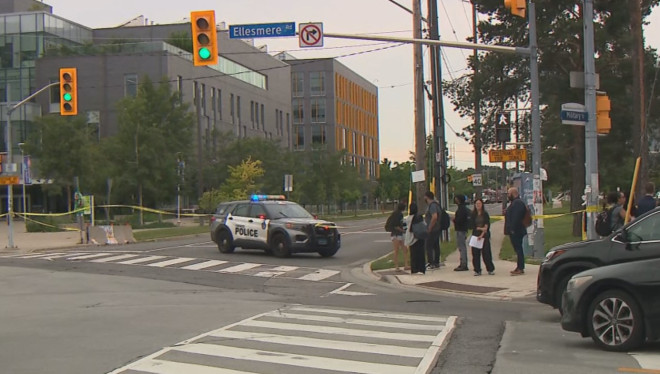

多伦多警方表示，多伦多大学士嘉堡校区发现炸弹是假的爆炸装置已被引爆。
多伦多警方正在调查周二在多伦多大学士嘉堡校区发现的一枚假炸弹，这枚假炸弹导致两栋建筑物被疏散。

图源：CP24
多伦多警方表示，他们在下午3:45接到电话，称在Military Trail和Ellesmere Road附近的校园内发现了一个可疑包裹。
根据大学的说法，校园安全人员在环境科学与化学大楼进行例行巡逻时发现了该包裹。
警官Dan Pravica表示，第43分局的警官和爆炸物处理小组成员前往校园，并确认该包裹“具有爆炸装置的特征”。
Pravica说，警方派出一个远程机器人。对可疑包裹进行拍照和X光检查。基于看到的X光图像，警官们认为它是一个爆炸装置。
因此，出于谨慎考虑，环境科学与化学大楼和教学中心被疏散，附近的道路被封闭。
Pravica说，警方使用了远程方法在安全距离内引爆了它。
警方后来确定该包裹是一个“假装设备”，没有爆炸成分。
图源：CP24
Pravica说，他们发现了一个看起来像真的炸弹但实际上不是炸弹的设备，他补充说该包裹有类似爆炸装置的电线。
警方对其他的建筑物已做检查，未发现其他设备，已确定对公共安全没有进一步的威胁。
Pravica说，警方没有关于谁可能对此负责或是什么促使该人留下包裹的信息，但他们正在查看校园的监控录像。
他说，这对每个人来说都令人担忧。无论是企业、学校建筑还是其他地方，想象一下你正在日常生活中，突然发现这个爆炸装置，这绝对是令人震惊的。
据大学称，道路和教学中心已经重新开放，但环境科学与化学大楼仍然关闭。
警方呼吁任何有信息的人请拨打416-808-4300联系警方或匿名联系灭罪热线。